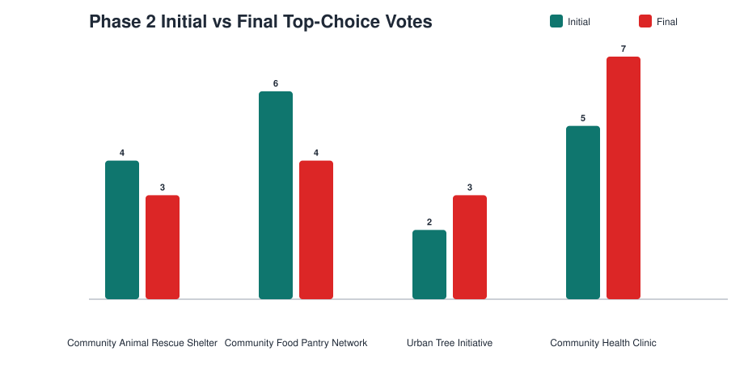
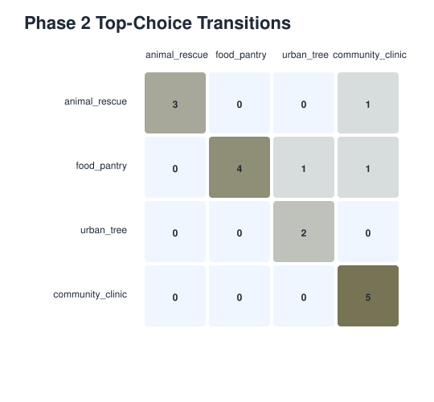
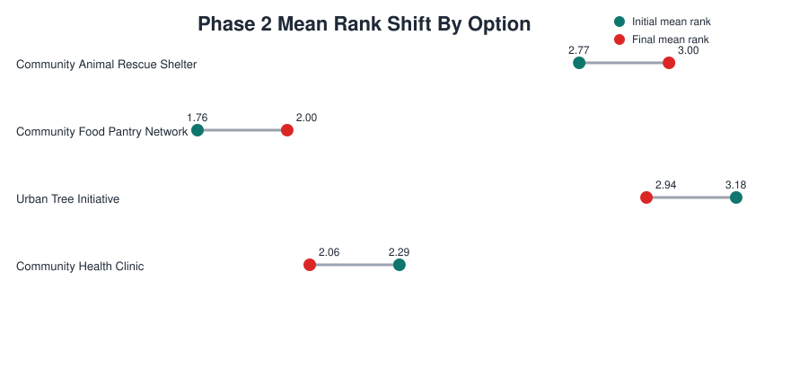
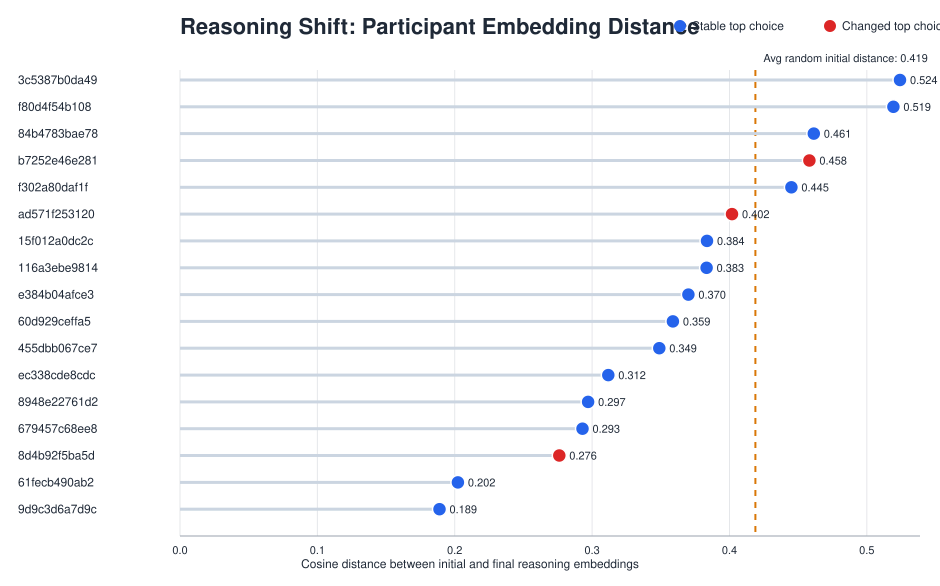

This dashboard compares the separate Phase 1 and Phase 2 cohorts, shows how winners depend on ranked-ballot aggregation, and tracks how reasoning and rankings shift inside Phase 2 after cross-pollination.
This dashboard summarizes a two-phase deliberation exercise. Participants first ranked four donation options independently, then cross-pollinated by reviewing others' reasoning and submitting a final ranking in Phase 2.
| context item | value |
|---|---|
| Decision options | 4 community interventions |
| Phase 2 participants | 17 |
| Cross-pollination lens | Ranking shifts and rationale shifts |
| Headline question | Did exposure to peers change preferences, ordering, or reasoning? |
The phase 2 effect is best understood as a ladder of change. A minority changed their winner, a larger group edited the ranking, and almost everyone revised the argument they used to justify that ranking.
10 participants stayed fully put, while cross-pollination produced three outright first-place switches.
5 made a limited reorder and 2 made a larger reshuffle across the four options.
1 kept the same theme set, 2 changed one theme, and 14 changed two or more themes.
| layer | count | what it means |
|---|---|---|
| Top-choice switch | 3/17 (18%) | Participants changed which option they ranked first. |
| Any ranking edit | 7/17 (41%) | Participants changed at least one position somewhere in the full ranking. |
| Theme rewrite | 16/17 (94%) | Participants added or dropped at least one substantive theme in their rationale. |



Community Health Clinic gained the most from cross-pollination, while Community Food Pantry lost its initial edge. Urban Tree Initiative also picked up support, mostly as an upward ranking move rather than a broad first-place takeover.
| option | initial top votes | final top votes | net top-vote change | participants moving it up |
|---|---|---|---|---|
| Community Animal Rescue Shelter | 4 | 3 | -1 | 0 |
| Community Food Pantry Network | 6 | 4 | -2 | 0 |
| Urban Tree Initiative | 2 | 3 | 1 | 3 |
| Community Health Clinic | 5 | 7 | 2 | 4 |
Only rules that are justified by ranked ballots are treated as primary results. Approval-style rules are excluded because the study captures rankings, not direct approvals.
| rule | phase1 | phase2_initial | phase2_final |
|---|---|---|---|
| plurality | Urban Tree Initiative | Community Food Pantry Network | Community Health Clinic |
| borda | Community Food Pantry Network | Community Food Pantry Network | Community Food Pantry Network |
| instant_runoff | Urban Tree Initiative | Community Food Pantry Network | Community Health Clinic |
| condorcet | n/a | Community Food Pantry Network | Community Health Clinic |
| copeland | Community Food Pantry Network | Community Food Pantry Network | Community Health Clinic |
| anti_plurality | Community Food Pantry Network | Community Food Pantry Network | Community Food Pantry Network |
The lollipop chart shows each participant's own embedding distance after cross-pollination, compared against the average distance between two different participants' initial reasonings.

| participant | top choice before | top choice after | wording shift | themes in initial | themes in final | theme moves |
|---|---|---|---|---|---|---|
| b7252e46e281 | Community Food Pantry Network | Urban Tree Initiative | Large rewrite | Deservingness targeting, Local community focus, Urgency basic needs | Cost effectiveness impact | 4 |
| ad571f253120 | Community Food Pantry Network | Community Health Clinic | Noticeable rewrite | Cost effectiveness impact, Local community focus | Local community focus | 1 |
| 8d4b92f5ba5d | Community Animal Rescue Shelter | Community Health Clinic | Noticeable rewrite | Deservingness targeting, Local community focus, Moral duty compassion | Local community focus | 2 |
Stable top-choice participants can still show substantial reasoning movement even when the headline preference remains the same.
| participant | top choice before | top choice after | wording shift | themes in initial | themes in final | theme moves |
|---|---|---|---|---|---|---|
| f80d4f54b108 | Community Health Clinic | Community Health Clinic | Large rewrite | Deservingness targeting, Effectiveness skepticism, Local community focus | Moral duty compassion | 4 |
| 3c5387b0da49 | Community Health Clinic | Community Health Clinic | Large rewrite | Deservingness targeting, Local community focus | Deservingness targeting, Moral duty compassion | 2 |
| 15f012a0dc2c | Urban Tree Initiative | Urban Tree Initiative | Large rewrite | Cost effectiveness impact | None | 1 |
| 84b4783bae78 | Community Food Pantry Network | Community Food Pantry Network | Large rewrite | Deservingness targeting, Local community focus, Urgency basic needs | Deservingness targeting | 2 |
| 455dbb067ce7 | Community Food Pantry Network | Community Food Pantry Network | Noticeable rewrite | Deservingness targeting | Personal connection identity | 2 |
| 679457c68ee8 | Urban Tree Initiative | Urban Tree Initiative | Noticeable rewrite | None | None | 0 |
| 8948e22761d2 | Community Health Clinic | Community Health Clinic | Noticeable rewrite | Deservingness targeting, Local community focus, Moral duty compassion, Urgency basic needs | Cost effectiveness impact, Local community focus, Urgency basic needs | 3 |
| 60d929ceffa5 | Community Food Pantry Network | Community Food Pantry Network | Noticeable rewrite | Deservingness targeting, Local community focus, Long term structural, Urgency basic needs | Urgency basic needs | 3 |